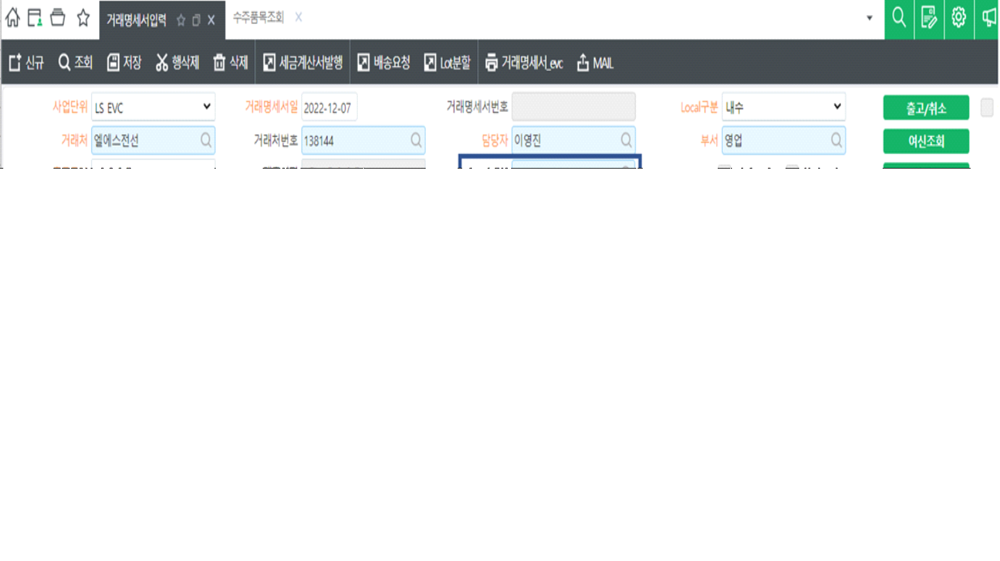

1. 행추가 기능 추가
1) [행추가] 버튼 앞에 숫자입력칸은 디폴트로 '1'을 입력
2) [행추가] 버튼을 클릭하면 포커스 있는 행을 그대로 복사
3) 복사하여 행추가 시 [행추가] 버튼 앞에 숫자입력칸에 있는 숫자만큼 행추가
4) [행추가] 버튼 뒤에 위치한 숫자칸에는 시트행 수 표시
5) [행추가] 버튼 뒤에 위치한 숫자칸은 Dis
6) 행추가 시 몇개가 추가 되었는지 몰라서 표시하는 것임 ('A'로 표시 되므로)
2. 위탁구분 \<--> 납품거래처 서로 위치 바꾸기
3. LotNo 코드도움 시 재고수량을 수량에 입력 (LotNo를 붙여넣기 해도 동일하게 수량에 재고수량 입력)

출처: \<http://61.250.183.6:8100/Page/Open/27900/100101/0/18820244>
--==============================================================
-- 행추가 - 입력한 숫자만큼 행추가하기 (거래명세서입력_evc, 구매납품입력_sscnt)
--==============================================================
-- 버튼은 행추가지만 기능은 행복사에 가까움....
local IsSet, IsNotAllModify, IsNotRowAdd, IsNotAccAmtMod, col, CellName, CellNameText, RowAddCnt
RowAddCnt = fltRowCnt.Value
if tonumber(RowAddCnt) == 0 then
RowAddCnt = 1
end
-- 데이터복사
ActiveRowOld = SS1.ActiveRow
for row = 0, RowAddCnt -1 do
Trow = SS1.DataRowCnt
-- 행추가
SS1.StartRow = Trow
SS1.ActionCount = 1
SS1.ActionType = 'ActionType_InsertRow'
-- 컬럼을 돌면서 데이터 복사하여 넣자
for col = 0, SS1.MaxCols - 1 do
SS1.ActiveCol = col
CellName = SS1.ActiveColumnName
CellNameText = CellText(SS1, SS1.ActiveRow, CellName)
if SS1.ActiveColumnName == 'InvoiceSerl' then
CellNameText = ''
end
SetText(SS1, Trow, CellName, CellNameText)
if SS1.ActiveCellReadOnly == true then
SS1.ActiveRow = Trow
SS1.ActiveCellReadOnly = true
SS1.ActiveRow = ActiveRowOld
end
end
-- 추가된 행은 워킹태그를 'A'로 변경하자.
SS1.ActiveRow = Trow
SS1.WorkingTag = 'A'
end